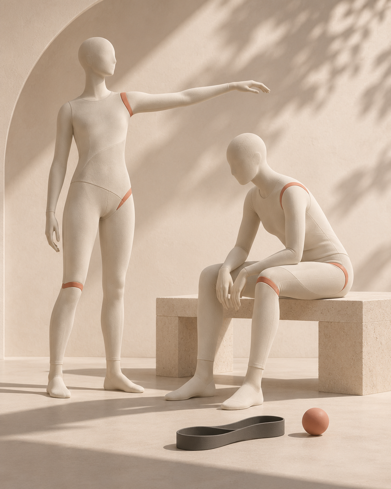

01
先理解身体
了解自己的情况与需求，认识身体遇到的限制。
ABOUT ME / 从我的经历说起
康复与运动科普创作者
学过中医康复治疗，做过客服与线上销售。
现在用 AI 辅助科普，聊康复、健身与日常生活。

01 / WHAT I SHARE
从历史到临床，从中医到现代康复。
点开一个话题，慢慢了解。
02 / EXPLORE YOUR BODY
久坐、低头、久站，或是准备重新运动。
选一个部位，看看与它有关的科普话题。
DAILY LIFE & MOVEMENT
看屏幕、用手机、抬手拿东西，颈肩参与着许多日常活动。先理解它，再聊活动与训练。
这里是知识导航，具体身体问题需要结合个人情况评估。
03 / REHAB MEETS MOVEMENT
关注功能，也关注体能。
把目光从一次训练，放回每个人的身体与生活。
了解自己的情况与需求，认识身体遇到的限制。
理解活动度、力量和日常功能，看看它们如何联系。
从工作到休闲，让关注身体成为生活的一部分。
从这三个场景，找到与你有关的话题。
点击卡片，了解用途、局限与需要考虑的事项。
04 / MOVEMENT NOTES
从具体的动作和目标出发，读懂一次练习。
THE WHY BEHIND THE NOTES
曾有同事遇到言语激进的客户，找我帮忙接手。我愿意先站在客户的角度，听清问题，再把事情一步步沟通清楚。
认真跟进拿下大单，让我有成就感；帮助别人解决问题，也一样。我想把这份耐心，放到知识分享里。
读一篇具体的动作笔记 ↗